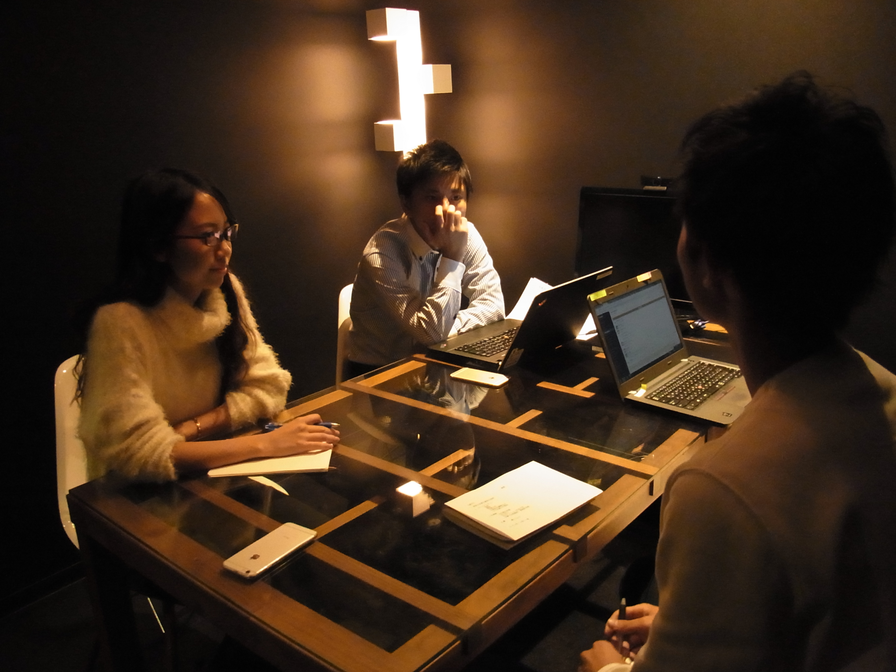
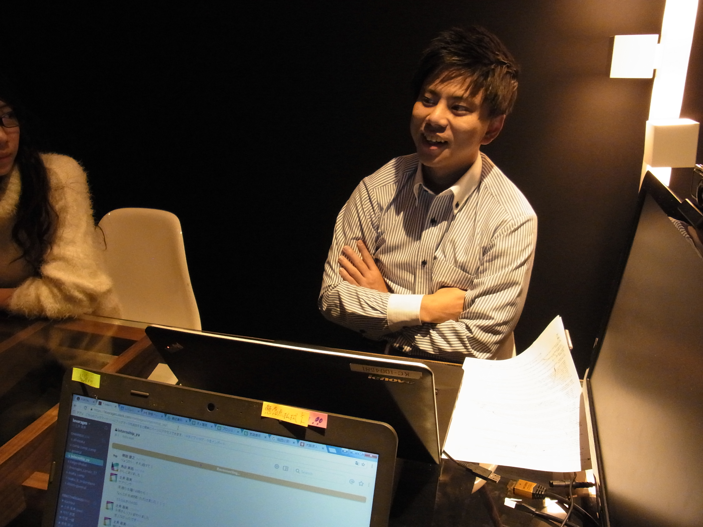

自分で考えて行動する楽しさ

ー話は変わりますが、なぜベンチャーで、かつなぜレバを選んだんですか？
まずベンチャーを選んだ理由は、成長するのが将来安定的に生きていくための１番の担保だと思っていたからです。
成長して自分に力があれば、どこでもやっていけるという考え方ですね。
大学在学中に、父親が働いてたパナソニックが大量に解雇をしていて、それにビビりました。自分もそうなったらやばいなと思って考え始めたのがきっかけですね。
あと、大学３年と４年の間にアメリカのシアトルに留学していた際、、留学中の３か月は現地の学生と勉強をして、残りの９ヶ月はいろんなビジネスをしている人の元で働いていました。
コーヒーショップの店員をやったり、マーケやったり、市場の調査をしたりしていて、自分で考えながらいろいろとやるのが楽しかったんです。
私は工学部で土木関係の勉強をしていて、日本に帰ってからは研究室に配属されて、全然面白くなくて（笑）
そこから自分で考えながらばりばり働けるところに就職しようと思って、ベンチャーを受け始めました。
今の話だとベンチャーであればどこでもいいみたいな話になるけど、レバは私が過去に１番成長できたバレー部の環境に似ていて、ここなら安心して成長できると思って選びました。
とにかくスキルを身に付けたい
ーレバテックを選んだ理由はありましたか？規模感も含めて
どこでもよかったんですが、やっぱりITが好きだったから最終的にはレバテックに営業で希望を出しました。
規模より当時はスキル軸の方が大きかったからです。
営業ってすごい泥臭いイメージがあると思うんですけど、これ新卒のうちにやっておきたくて最初は営業で希望を出しました。
今思ったら単純に営業に希望を出したのは間違ってたかなと思ってますけど。
間違っていたと思ったのは、私は当時、一色単に営業って言ってたのですが、
営業は業種によって、営業の内容が全然違うと後々気付いたからです。
だから後になってLTでの営業、という視点で考えておけばよかったなと思いました。
ー悠人さんは入社２年目でリーダーになられていますが、レバテックで営業して今はよかったと思っていますか？
よかったと思ってます！
私はリーダーになりたいってずっと言ってました。当時入ったとき、２年目でリーダーになってる人がいなかったからです。
なので３年目でリーダーになる目標を立てていました。
そこから細かく目標を立てて、こういうことやりたいですって周りに言っていたら、まさかのまさかでリーダーをやらせていただけたって感じですかね。
ーリーダーになりたいという目標をたてたのは、何かを見据えての決断ですか？
というよりも、これも成長欲求の一部かな。
インターンもやってなかったし、入社当初は自分には周りに勝つ要素が何もないって思って焦っていました。
リーダーになったらいろんなものが見えてくるってことを信じて、いち早くリーダーになろうと決めていました。
ー次の目標はありますか？
大阪支店を大きくするっていうのは直近の目標であったりはするけれども、
やっぱり海外に行って支店を立ち上げたいです。
海外で仕事をすることによって日本では得られないスキルが得られる軸もあるし、あとは単純に興味です。私はバックパッカーの経験もあるので、海外にすごく興味があります！
世界に広がっていくサービスを作りたい

ー仕事を通してやりたいことはありますか？
仕事を通してやりたいと思っているのは、世界に広がっていくサービスを作ることです。
今必要そうだなと思ったことはどんどんやろうと思っています。
ビジネススクールに通おうかなとか、プログラミングも始めようかなとか。
ざっくりとですが、貧困問題には興味があるので将来的にはマザーハウスがやってるようなことをしたいですね。
社会意義もあるし、根本的な問題を解決するためにビジネスを手段として利用してるという視点で、すごくやってみたいと思っています。
ー大きな夢ですね。それでは最後にインターン生に一言ください！
絶対にやるべきだなと思うのは、『伝説の新人』に載ってる「チャンスのスパイラルに乗る」こと。
レバで入った新卒って自分はこれをやりたい！っていう思いが強くて、希望していない業務がきたときに拒否反応を示す人が少なくないんです。
でもそこで一度自分が任せる側の立場になって考えてほしい。
やってほしいことを渡して、すごい成果物が返ってきて初めて「やらせてあげよう」と思いますよね。
だから、成長したいと思うなら、任せれた仕事を常に120％で返し続けるのが大事です。
それを続けるとやりたいことができるチャンスがいつかめぐってくると思います。
そして、とりあえずやってみて失敗をしまくることが大切だと思います！
ー悠人さん本日は本当にありがとうございました!
悠人さんへのコメントどしどしおまちしております！
※インターンへのコメントもおまちしてます！！！
他の大阪メンバーはこちら！！(写真をクリック！)